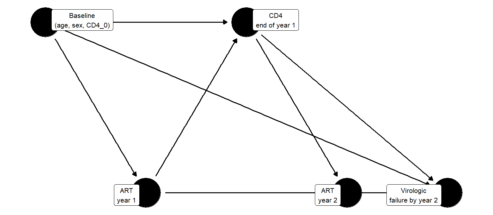
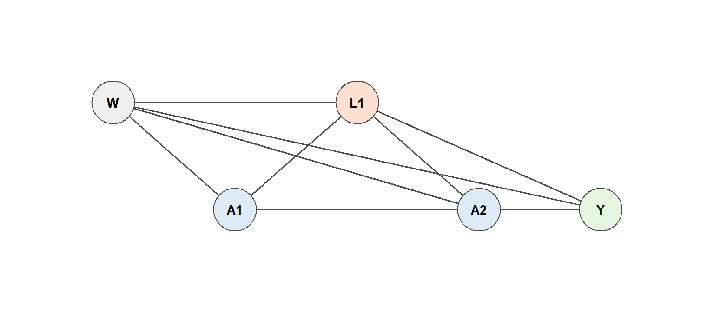

Why standard regression fails when treatment and confounders co-evolve, and what to do about it
Estimated reading time: 30 minutes
Learning objectives
Explain why time-varying confounders affected by prior treatment break standard regression, generalized estimating equations (GEE), and mixed models
Identify the treatment-confounder feedback loop in a DAG and distinguish confounding paths from causal mediated paths
State the sequential versions of consistency, exchangeability, and positivity
Describe why g-methods (g-computation and inverse probability of treatment weighting, IPTW) and the doubly robust longitudinal targeted maximum likelihood estimator (L-TMLE) are needed, and how they differ from regression
Understand why static interventions may violate positivity and how stochastic interventions address this
14.1 Why longitudinal treatments are different
Parts I and II dealt with point-treatment settings. Real clinical care is not so tidy. Patients start medications, clinicians monitor their health, and treatment gets adjusted in response to what the monitoring shows. That loop, treatment shaping health and health shaping the next treatment decision, repeats at every clinic visit, and it is what makes the longitudinal problem harder than the point-treatment case. This chapter explains why time-varying confounding affected by prior treatment breaks standard regression, lays out the identification assumptions, and previews the two estimation approaches developed in the rest of Part III: longitudinal TMLE (L-TMLE) and longitudinal modified treatment policies (LMTP).
14.2 Treatment-confounder feedback in the HIV cohort
Suppose we want the effect of sustained antiretroviral therapy (ART) on virologic failure over two years in an HIV cohort. At each visit, the clinician measures CD4 cell count and weighs it against adherence support and side-effect tolerance before deciding whether to continue or modify therapy. CD4 wears two hats at once. It is a confounder for future treatment, since low CD4 prompts more aggressive intervention and also predicts virologic failure, and it is a mediator of past treatment, since ART raises CD4 by suppressing viral replication. The DAG makes this explicit.
Show code
dag_hiv_intro <-dagify( A1 ~ W, L1 ~ A1 + W, A2 ~ L1, Y ~ A1 + A2 + L1 + W,exposure ="A1", outcome ="Y",labels =c(W ="Baseline\n(age, sex, CD4_0)", A1 ="ART\nyear 1",L1 ="CD4\nend of year 1", A2 ="ART\nyear 2",Y ="Virologic\nfailure by year 2"),coords =list(x =c(W =0, A1 =1, L1 =2, A2 =3, Y =4),y =c(W =0.8, A1 =0, L1 =0.8, A2 =0, Y =0) ))ggdag(dag_hiv_intro, text =FALSE, use_labels ="label", text_size =2.8) +theme_dag()

Figure 14.1: Time-varying confounding in a two-year HIV/ART study. CD4 at the end of year 1 is both a confounder of year-2 treatment and a mediator of year-1 treatment.
Adjusting for CD4 in a regression blocks the causal pathway \(A_1 \to L_1 \to Y\). Leaving it out leaves \(A_2\) confounded. A time-varying covariate that is both a confounder for future treatment and a mediator of past treatment cannot be handled by standard regression. The simulation below shows this with a stylized two-period HIV cohort.
The regression that conditions on CD4 recovers only the direct effect of ART: its \(A_1\) coefficient sits near 0.4, the direct structural parameter, and the standardized risk difference it implies falls short of the true total effect. Conditioning on \(L_1\) holds the mediator fixed, so the part of the effect that runs through CD4 recovery is discarded. This is structural bias, not sampling noise: it persists at any sample size, because the problem is which pathway the model blocks.
14.3 The HIV cohort: Our running example
CD4 count is the canonical time-dependent confounder in the HIV literature (M. L. Petersen et al. 2007; Wal and Geskus 2011), and we will return to it throughout the next several chapters. Building on the toy two-period DAG above, here is the clinical question we are working toward:
What is the probability of virologic failure by 9 months under sustained high adherence to ART, compared to observed adherence patterns, adjusting for time-varying CD4 count?
The data structure at each clinic visit looks like this:
At each visit, CD4 is measured first, then adherence is recorded, then we check whether the patient is still under observation. The ordering is not arbitrary. It encodes our assumptions about the temporal sequence, and everything downstream depends on getting it right.
ART adherence at visit \(t-1\) improves CD4 at visit \(t\). Higher CD4 may in turn reduce clinical urgency and change adherence decisions, and CD4 also directly affects virologic failure risk. This is the same feedback structure as the toy two-period example above, scaled up to many time points.
14.4 Why standard regression fails
We have already seen the problem in the two-period HIV example. This section spells out what goes wrong and why.
14.4.1 The treatment-confounder feedback loop
When a time-varying covariate \(L_t\) is (1) affected by prior treatment \(A_{t-1}\) and (2) confounds the relationship between \(A_t\) and \(Y\), we say there is treatment-confounder feedback. In HIV, CD4 count satisfies both conditions: ART raises CD4, and CD4 predicts both future adherence decisions and virologic failure.
Figure 14.2: Treatment–confounder feedback in an HIV cohort. CD4 count at each visit is affected by prior ART adherence and also confounds the relationship between future adherence and the outcome.
14.4.2 The dilemma
A standard regression model, whether logistic, Cox, or GEE, faces a lose-lose choice. Adjust for \(L_t\) and you block the causal pathway \(A_{t-1} \to L_t \to Y\). Omit \(L_t\) and you leave \(A_t\) confounded. No regression specification manages to deconfound future treatment and preserve the mediated effect of past treatment at the same time.
14.4.3 Seeing the dilemma step by step
The following DAG panels isolate each component using a simplified two-period version of the HIV DAG.
14.4.3.1 Step 1: The full causal structure
Show code
draw_dag_step(highlight_pairs =list())

Figure 14.3: Step 1: Full causal structure. All paths shown, no highlighting.
14.4.3.2 Step 2: Why adjusting for \(L_1\) fails
Conditioning on \(L_1\) (shown by the box around the node) blocks the confounding paths \(L_1 \to A_2\) and \(L_1 \to Y\), which is what we want. But it also blocks the causal mediated path \(A_1 \to L_1 \to Y\), which we wanted to keep open. The edge \(L_1 \to Y\) sits on both paths at once: it is part of the confounding problem and part of the causal effect we are trying to estimate. That double duty is why no single regression can solve both problems.
Figure 14.4: Step 2: Why adjusting for L1 fails. Red = confounding paths we want to block. Blue = causal mediated path also blocked by conditioning on L1. Purple = L1 -> Y is on BOTH paths. The box around L1 represents conditioning.
14.4.3.3 Step 3: The feedback loop
The reason \(L_1\) is both a confounder and a mediator is the feedback loop: \(A_1 \to L_1 \to A_2\). Prior treatment affects the time-varying confounder, which in turn affects future treatment.
Figure 14.5: Step 3: The feedback loop. A1 -> L1 -> A2 is the path that makes L1 simultaneously a confounder and a mediator.
G-methods and the doubly robust L-TMLE get around this without conditioning on \(L_1\) in a single regression. G-computation and L-TMLE integrate over the distribution of \(L_1\) under the hypothetical intervention, and IPTW reweights the data so that \(L_1\) no longer predicts later treatment.
14.4.4 What about GEE, mixed models, or covariate-adjusted regression?
GEE, mixed models, and covariate-adjusted regression all condition on time-varying covariates the same way standard regression does, so none of them escape the treatment-confounder feedback problem. GEE and mixed models handle within-subject correlation, but correlation is a separate issue from the causal structure of feedback. A regression that omits the time-varying covariates avoids blocking the mediated path, but it leaves later treatment confounded, so it converges to a different quantity from the causal effect: it never integrates over the interventional distribution of \(L_t\). When feedback is weak the two can happen to agree; once feedback is strong they come apart. A useful thought experiment is to ask what each method would converge to with unlimited data. If the answers differ, the methods are estimating different things.
14.5 Counterfactual notation for longitudinal interventions
To formalize the causal question, we need notation for hypothetical treatment sequences.
Let \(\bar{A} = (A_1, A_2, \ldots, A_T)\) denote the observed treatment history across \(T\) visits, and let \(\bar{L} = (L_1, \ldots, L_T)\) denote the observed time-varying confounders. Let \(\bar{a} = (a_1, \ldots, a_T)\) denote a specific hypothetical treatment sequence. The potential outcome \(Y(\bar{a})\) is the outcome that would have been observed if the patient had followed treatment sequence \(\bar{a}\), regardless of what actually happened.
A static regime assigns the same treatment at every visit regardless of patient history. For instance, \(\bar{a} = (1, 1, \ldots, 1)\) means “always maintain high adherence.” A dynamic regime lets the treatment at each visit depend on the evolving covariate history: \(a_t = d_t(\bar{L}_t, \bar{A}_{t-1}, W)\). A stochastic regime does not fix a specific treatment value at all. Instead it modifies the probability of treatment, for example raising the probability of high adherence by 20 percentage points at each visit.
The canonical estimand in the HIV example is the average counterfactual outcome under sustained high adherence versus the observed adherence pattern:
where \(E[Y(\bar{1})]\) is the virologic failure probability if everyone had maintained high adherence at every visit, and \(E[Y]\) is the mean outcome under the adherence patterns actually observed. That second term is a feature of the observed data, so it needs no potential-outcome notation. The two-period demonstration earlier in this chapter contrasted always-adhere with never-adhere rather than with the observed pattern, an all-or-nothing comparison that makes the mediated part of the effect easier to see.
14.6 Identification assumptions
The potential outcome \(Y(\bar{a})\) is a counterfactual quantity. To estimate it from observed data, we need assumptions that bridge what we observe and what would have happened under a hypothetical intervention. In the longitudinal setting, the familiar point-treatment assumptions have to hold at every time point rather than just once.
Consistency. If a patient’s observed treatment history matches the hypothetical sequence \(\bar{a}\), then their observed outcome equals their potential outcome: \(Y = Y(\bar{a})\) when \(\bar{A} = \bar{a}\). This requires that the treatment is well-defined and that there are no hidden versions of treatment.
Sequential exchangeability. At each time \(t\), treatment is unconfounded given the observed history: \[
Y(\bar{a}) \perp\!\!\!\perp A_t \mid \bar{L}_t, \bar{A}_{t-1}, W \quad \text{for all } t.
\] This says that, conditional on everything we have measured up to visit \(t\), treatment assignment at visit \(t\) is as good as random. In practice, this requires measuring every confounder that influences both the treatment decision and the outcome at every visit.
Unmeasured confounders (substance use severity, housing instability, clinic-specific prescribing culture) that affect both adherence and virologic failure would violate this assumption.
Sequential positivity. Every treatment level must be possible at every visit for every observed covariate history: \[
P(A_t = a \mid \bar{L}_t, \bar{A}_{t-1}, W) > 0 \quad \text{for all } t, a.
\] If some patient subgroups essentially never achieve high adherence (for example, patients with severe side effects on a particular regimen), then the mean of \(Y(\bar{1})\) is not identified for those subgroups, and any estimate there rests on extrapolation.
All three assumptions are harder to satisfy in the longitudinal setting. Sequential exchangeability must hold at every visit, and positivity must hold for every covariate history. This is a large part of why stochastic regimes, which relax the positivity requirement, are often preferred over deterministic “always treat” regimes.
14.7 Why g-methods are needed
Under the assumptions above, the causal quantity \(E[Y(\bar{a})]\) can be expressed as a function of the observed data distribution through the g-computation formula(J. Robins 1986; Hernán and Robins 2025):
The product term generates the interventional distribution of covariate trajectories, meaning what CD4 counts would look like under regime \(\bar{a}\), and the outer expectation gives the outcome under those trajectories, averaged over the baseline covariates \(W\). Standard regression conditions on time-varying covariates instead of integrating over their interventional distribution, and that is the difference that matters here. Robins’s g-methods estimate this quantity: g-computation, inverse probability of treatment weighting (IPTW) of marginal structural models, and g-estimation of structural nested models. This handbook uses the first two and does not cover g-estimation. Targeted maximum likelihood estimation (TMLE) is not a g-method, but it estimates the same quantity: it is a doubly robust estimator that combines an outcome model with a treatment model.
G-computation, IPTW, and TMLE were each introduced for the point-treatment case in Chapter 8, Chapter 9, and Chapter 10. Each brings its own strengths and limitations to the longitudinal setting:
Reweight by inverse of cumulative treatment probability
Cumulative weights become extreme with many time points
Longitudinal TMLE
Sequential regressions plus targeting steps
More complex to implement, but doubly robust
IPTW of marginal structural models was an early workhorse for HIV data (J. M. Robins, Hernán, and Brumback 2000), but it grows unstable as the number of visits climbs, because the weights are products of time-specific inverse probabilities and those products can become enormous. Longitudinal TMLE and LMTP tame this instability by using substitution estimators with targeting steps.
14.8 Preview of L-TMLE and LMTP
The rest of Part III develops two estimation approaches in detail, each suited to a different type of causal question.
14.8.1 L-TMLE for standard longitudinal interventions
Chapter 15 introduces longitudinal TMLE (L-TMLE), which runs the TMLE “model, then target” cycle backwards through time. At each step it conditions on \(L_t\) to deconfound future treatment, then integrates \(L_t\) out in the backwards regression so the mediated effect of past treatment survives. The ltmle R package implements this procedure, and Chapter 16 codes it by hand for readers who want to see every step.
14.8.2 LMTP for realistic adherence interventions
Chapter 17 presents the LMTP framework (longitudinal modified treatment policies), which defines interventions in which the hypothetical treatment depends on the patient’s natural treatment value. This includes stochastic shifts that sidestep the positivity problems baked into deterministic regimes. The lmtp R package implements this framework.
Both approaches build on the identification assumptions in this chapter. L-TMLE handles standard static or dynamic regimes, while LMTP accommodates more flexible modified treatment policies.
14.9 Check your understanding
Q1. Why can’t you simply add time-varying confounders as covariates in a Cox regression when those confounders are affected by prior treatment?
Because a time-varying confounder that is affected by prior treatment sits on the causal pathway between earlier treatment and the outcome. Adjust for it in a standard regression and you block part of the treatment effect (overadjustment bias). Omit it and you leave uncontrolled confounding. This is the treatment-confounder feedback problem, and g-methods get around it by integrating over the interventional distribution of the time-varying confounder rather than conditioning on it.
Q2. What does “sequential exchangeability” require that ordinary exchangeability does not?
Ordinary (point-treatment) exchangeability requires that treatment is unconfounded conditional on baseline covariates measured at a single time point. Sequential exchangeability requires the same thing at every time point, conditional on the entire covariate and treatment history up to that point. In practice that means measuring every confounder that influences both treatment decisions and the outcome at every visit. That is a much harder bar to clear, especially when physician judgment, symptom severity, or patient preferences evolve over time and may never make it into the data.
(M. Petersen et al. 2014): longitudinal TMLE for dynamic and static marginal structural working models, with an HIV application.
(Hernán and Robins 2025): textbook treatment of longitudinal causal inference and g-methods.
(Dı́az et al. 2023): lmtp R package for modified treatment policies.
(Wal and Geskus 2011): HAART observational cohort used as the running example.
14.11 What comes next
The next chapter walks through L-TMLE step by step using a two-time-point HIV cohort example with the ltmle package.
Dı́az, Iván, Nicholas Williams, Katherine L Hoffman, and Edward J Schenck. 2023. “Nonparametric Causal Effects Based on Longitudinal Modified Treatment Policies.”Journal of the American Statistical Association 118 (542): 846–56. https://doi.org/10.1080/01621459.2021.1955691.
Petersen, Maya L, Steven G Deeks, Jeffrey N Martin, and Mark J van der Laan. 2007. “History-Adjusted Marginal Structural Models for Estimating Time-Varying Effect Modification.”American Journal of Epidemiology 166 (9): 985–93.
Petersen, Maya, Joshua Schwab, Susan Gruber, Nello Blaser, Michael Schomaker, and Mark van der Laan. 2014. “Targeted Maximum Likelihood Estimation for Dynamic and Static Longitudinal Marginal Structural Working Models.”Journal of Causal Inference 2 (2): 147–85. https://doi.org/10.1515/jci-2013-0007.
Robins, James. 1986. “A New Approach to Causal Inference in Mortality Studies with a Sustained Exposure Period—Application to Control of the Healthy Worker Survivor Effect.”Mathematical Modelling 7 (9–12): 1393–1512.
Robins, James M., Miguel A. Hernán, and Babette Brumback. 2000. “Marginal Structural Models and Causal Inference in Epidemiology.”Epidemiology 11 (5): 550–60.
Wal, Willem M. van der, and Ronald B. Geskus. 2011. “ipw: An R Package for Inverse Probability Weighting.”Journal of Statistical Software 43 (13): 1–23. https://doi.org/10.18637/jss.v043.i13.
Source Code
---subtitle: "Why standard regression fails when treatment and confounders co-evolve, and what to do about it"format: html---# Longitudinal Causal Inference and Time-Dependent Confounding {#sec-longitudinal-confounding}*Estimated reading time: 30 minutes*::: {.callout-note}## Learning objectives- Explain why time-varying confounders affected by prior treatment break standard regression, generalized estimating equations (GEE), and mixed models- Identify the treatment-confounder feedback loop in a DAG and distinguish confounding paths from causal mediated paths- State the sequential versions of consistency, exchangeability, and positivity- Describe why g-methods (g-computation and inverse probability of treatment weighting, IPTW) and the doubly robust longitudinal targeted maximum likelihood estimator (L-TMLE) are needed, and how they differ from regression- Understand why static interventions may violate positivity and how stochastic interventions address this:::```{r}#| include: false#| code-fold: truelibrary(dagitty)library(ggdag)library(ggplot2)library(tidyverse)knitr::opts_chunk$set(collapse =TRUE,comment ="#>",fig.width =7,fig.height =4,fig.align ="center")```## Why longitudinal treatments are differentParts I and II dealt with point-treatment settings. Real clinical care is not so tidy. Patients start medications, clinicians monitor their health, and treatment gets adjusted in response to what the monitoring shows. That loop, treatment shaping health and health shaping the next treatment decision, repeats at every clinic visit, and it is what makes the longitudinal problem harder than the point-treatment case. This chapter explains why time-varying confounding affected by prior treatment breaks standard regression, lays out the identification assumptions, and previews the two estimation approaches developed in the rest of Part III: longitudinal TMLE (L-TMLE) and longitudinal modified treatment policies (LMTP).## Treatment-confounder feedback in the HIV cohortSuppose we want the effect of sustained antiretroviral therapy (ART) on virologic failure over two years in an HIV cohort. At each visit, the clinician measures CD4 cell count and weighs it against adherence support and side-effect tolerance before deciding whether to continue or modify therapy. CD4 wears two hats at once. It is a **confounder** for future treatment, since low CD4 prompts more aggressive intervention and also predicts virologic failure, and it is a **mediator** of past treatment, since ART raises CD4 by suppressing viral replication. The DAG makes this explicit.```{r}#| label: fig-hiv-feedback-intro#| fig-cap: "Time-varying confounding in a two-year HIV/ART study. CD4 at the end of year 1 is both a confounder of year-2 treatment and a mediator of year-1 treatment."#| fig-width: 8#| fig-height: 3.5#| code-fold: truedag_hiv_intro <-dagify( A1 ~ W, L1 ~ A1 + W, A2 ~ L1, Y ~ A1 + A2 + L1 + W,exposure ="A1", outcome ="Y",labels =c(W ="Baseline\n(age, sex, CD4_0)", A1 ="ART\nyear 1",L1 ="CD4\nend of year 1", A2 ="ART\nyear 2",Y ="Virologic\nfailure by year 2"),coords =list(x =c(W =0, A1 =1, L1 =2, A2 =3, Y =4),y =c(W =0.8, A1 =0, L1 =0.8, A2 =0, Y =0) ))ggdag(dag_hiv_intro, text =FALSE, use_labels ="label", text_size =2.8) +theme_dag()```Adjusting for CD4 in a regression blocks the causal pathway $A_1 \to L_1 \to Y$. Leaving it out leaves $A_2$ confounded. A time-varying covariate that is both a confounder for future treatment and a mediator of past treatment cannot be handled by standard regression. The simulation below shows this with a stylized two-period HIV cohort.```{webr-r}set.seed(2025)n <- 5000W <- rnorm(n) # baseline severity (e.g., baseline CD4, lower = sicker)A1 <- rbinom(n, 1, plogis(0.3 * W)) # ART adherence year 1L1 <- rnorm(n, 0.5 * A1 + 0.4 * W) # CD4 end of year 1: improved by ARTA2 <- rbinom(n, 1, plogis(0.5 * L1)) # ART adherence year 2 driven by current CD4Y <- rbinom(n, 1, plogis(-1.5 + 0.4 * A1 + 0.4 * A2 + 0.3 * L1 + 0.3 * W))# The quantity we want is the TOTAL effect of sustained adherence on the risk# scale: failure risk if everyone always adhered (A1 = A2 = 1) minus if no one# did (A1 = A2 = 0). Simulate it from the known mechanism, letting CD4 (L1)# respond to year-1 treatment the way it does in the data-generating process.risk_under <- function(a) { L1a <- rnorm(n, 0.5 * a + 0.4 * W) # CD4 responds to the assigned regime mean(plogis(-1.5 + 0.4 * a + 0.4 * a + 0.3 * L1a + 0.3 * W))}true_total_rd <- risk_under(1) - risk_under(0)# A regression that "controls for CD4" conditions on L1, which sits on the# A1 -> L1 -> Y pathway. Standardizing its predictions holds CD4 at its observed# values instead of letting treatment move it, so the mediated part of the# effect is discarded.naive_mod <- glm(Y ~ A1 + A2 + L1 + W, family = binomial)dat_naive <- data.frame(A1, A2, L1, W)p_treat <- predict(naive_mod, transform(dat_naive, A1 = 1, A2 = 1), type = "response")p_control <- predict(naive_mod, transform(dat_naive, A1 = 0, A2 = 0), type = "response")naive_rd <- mean(p_treat) - mean(p_control)cat("True total effect of sustained ART (risk difference):", round(true_total_rd, 3), "\n")cat("CD4-adjusted regression estimate: ", round(naive_rd, 3), "\n")cat("Direct-effect-only A1 coefficient (logit scale): ", round(coef(naive_mod)["A1"], 3), "\n")``````{r}#| include: falseset.seed(2025)n <-5000W <-rnorm(n) # baseline severity (e.g., baseline CD4, lower = sicker)A1 <-rbinom(n, 1, plogis(0.3* W)) # ART adherence year 1L1 <-rnorm(n, 0.5* A1 +0.4* W) # CD4 end of year 1: improved by ARTA2 <-rbinom(n, 1, plogis(0.5* L1)) # ART adherence year 2 driven by current CD4Y <-rbinom(n, 1, plogis(-1.5+0.4* A1 +0.4* A2 +0.3* L1 +0.3* W))# The quantity we want is the TOTAL effect of sustained adherence on the risk# scale: failure risk if everyone always adhered (A1 = A2 = 1) minus if no one# did (A1 = A2 = 0). Simulate it from the known mechanism, letting CD4 (L1)# respond to year-1 treatment the way it does in the data-generating process.risk_under <-function(a) { L1a <-rnorm(n, 0.5* a +0.4* W) # CD4 responds to the assigned regimemean(plogis(-1.5+0.4* a +0.4* a +0.3* L1a +0.3* W))}true_total_rd <-risk_under(1) -risk_under(0)# A regression that "controls for CD4" conditions on L1, which sits on the# A1 -> L1 -> Y pathway. Standardizing its predictions holds CD4 at its observed# values instead of letting treatment move it, so the mediated part of the# effect is discarded.naive_mod <-glm(Y ~ A1 + A2 + L1 + W, family = binomial)dat_naive <-data.frame(A1, A2, L1, W)p_treat <-predict(naive_mod, transform(dat_naive, A1 =1, A2 =1), type ="response")p_control <-predict(naive_mod, transform(dat_naive, A1 =0, A2 =0), type ="response")naive_rd <-mean(p_treat) -mean(p_control)cat("True total effect of sustained ART (risk difference):", round(true_total_rd, 3), "\n")cat("CD4-adjusted regression estimate: ", round(naive_rd, 3), "\n")cat("Direct-effect-only A1 coefficient (logit scale): ", round(coef(naive_mod)["A1"], 3), "\n")```The regression that conditions on CD4 recovers only the *direct* effect of ART: its $A_1$ coefficient sits near 0.4, the direct structural parameter, and the standardized risk difference it implies falls short of the true total effect. Conditioning on $L_1$ holds the mediator fixed, so the part of the effect that runs through CD4 recovery is discarded. This is structural bias, not sampling noise: it persists at any sample size, because the problem is which pathway the model blocks.## The HIV cohort: Our running exampleCD4 count is the canonical time-dependent confounder in the HIV literature [@petersen2007msm; @vanderwal2011ipw], and we will return to it throughout the next several chapters. Building on the toy two-period DAG above, here is the clinical question we are working toward:> What is the probability of virologic failure by 9 months under sustained high adherence to ART, compared to observed adherence patterns, adjusting for time-varying CD4 count?The data structure at each clinic visit looks like this:| Visit | What is measured | Variable role ||-------|-----------------|---------------|| Baseline | Age, sex, baseline CD4, baseline viral load | Fixed covariates $W$ || Visit $t$ | CD4 count | Time-varying confounder $L_t$ || Visit $t$ | Adherence to ART | Treatment $A_t$ || Visit $t$ | Still in study? | Censoring $C_t$ || End of follow-up | Virologic failure (HIV RNA $\geq$ 200 copies/mL) | Outcome $Y$ |At each visit, CD4 is measured first, then adherence is recorded, then we check whether the patient is still under observation. The ordering is not arbitrary. It encodes our assumptions about the temporal sequence, and everything downstream depends on getting it right.ART adherence at visit $t-1$ improves CD4 at visit $t$. Higher CD4 may in turn reduce clinical urgency and change adherence decisions, and CD4 also directly affects virologic failure risk. This is the same feedback structure as the toy two-period example above, scaled up to many time points.## Why standard regression failsWe have already seen the problem in the two-period HIV example. This section spells out what goes wrong and why.### The treatment-confounder feedback loopWhen a time-varying covariate $L_t$ is (1) affected by prior treatment $A_{t-1}$ and (2) confounds the relationship between $A_t$ and $Y$, we say there is **treatment-confounder feedback**. In HIV, CD4 count satisfies both conditions: ART raises CD4, and CD4 predicts both future adherence decisions and virologic failure.```{r}#| label: fig-hiv-feedback#| fig-cap: "Treatment--confounder feedback in an HIV cohort. CD4 count at each visit is affected by prior ART adherence and also confounds the relationship between future adherence and the outcome."#| fig-width: 9#| fig-height: 4#| code-fold: truedag_hiv <-dagify( A1 ~ W, L1 ~ A1 + W, A2 ~ L1 + A1 + W, Y ~ A1 + A2 + L1 + W,exposure ="A1", outcome ="Y",labels =c(W ="Baseline\n(age, sex, CD4_0)", A1 ="ART adherence\nvisit 1",L1 ="CD4 count\nvisit 1", A2 ="ART adherence\nvisit 2",Y ="Virologic\nfailure"),coords =list(x =c(W =0, A1 =1, L1 =2, A2 =3, Y =4),y =c(W =1, A1 =0, L1 =0.8, A2 =0, Y =0) ))ggdag(dag_hiv, text =FALSE, use_labels ="label", text_size =2.8) +theme_dag()```### The dilemmaA standard regression model, whether logistic, Cox, or GEE, faces a lose-lose choice. Adjust for $L_t$ and you block the causal pathway $A_{t-1} \to L_t \to Y$. Omit $L_t$ and you leave $A_t$ confounded. No regression specification manages to deconfound future treatment and preserve the mediated effect of past treatment at the same time.### Seeing the dilemma step by stepThe following DAG panels isolate each component using a simplified two-period version of the HIV DAG.```{r}#| label: dag-step-setup#| include: false#| code-fold: true# Tableau 10 colour palettetab10 <-c(blue ="#4E79A7", orange ="#F28E2B", red ="#E15759",teal ="#76B7B2", green ="#59A14F", yellow ="#EDC948",purple ="#B07AA1", pink ="#FF9DA7", brown ="#9C755F",grey ="#BAB0AC")# Two-period DAG: W -> A1 -> L -> A2 -> Y, with feedbacklibrary(dagitty)library(ggdag)dag_ch <-dagitty('dag { W [pos="0,0.8"] A1 [pos="1,0"] L1 [pos="2,0.8"] A2 [pos="3,0"] Y [pos="4,0"] W -> A1 W -> L1 W -> A2 W -> Y A1 -> L1 A1 -> Y L1 -> A2 L1 -> Y A2 -> Y}')dag_ch_tidy <-tidy_dagitty(dag_ch)dag_ch_df <- dag_ch_tidy$data# Node roles for fill colournode_roles_ch <-c(W ="baseline", A1 ="treatment", L1 ="confounder",A2 ="treatment", Y ="outcome")dag_ch_df$role <- node_roles_ch[dag_ch_df$name]role_fills_ch <-c("baseline"="#F0F0F0","confounder"="#FEE0D2","treatment"="#DEEBF7","outcome"="#E5F5E0")# Helper: draw the DAG with optional edge highlightingdraw_dag_step <-function(highlight_pairs =list(),highlight_colour = tab10[["red"]],df = dag_ch_df) { edges_all <- df[!is.na(df$to), ] edges_all$highlighted <-FALSEfor (hp in highlight_pairs) { idx <- edges_all$name == hp[1] & edges_all$to == hp[2] edges_all$highlighted[idx] <-TRUE } has_hl <-length(highlight_pairs) >0 xrng <-range(df$x, na.rm =TRUE) yrng <-range(df$y, na.rm =TRUE) pad <-0.6ggplot(df, aes(x = x, y = y)) +geom_segment(data = edges_all,aes(xend = xend, yend = yend),colour =if (has_hl) "grey70"else"grey30",linewidth =if (has_hl) 0.4else0.6,arrow =arrow(length =unit(0.08, "inches"), type ="closed")) + {if (has_hl)geom_segment(data = edges_all[edges_all$highlighted, ],aes(xend = xend, yend = yend),colour = highlight_colour, linewidth =1.0,arrow =arrow(length =unit(0.12, "inches"), type ="closed")) } +geom_point(aes(fill = role), size =16, shape =21,colour ="grey30", stroke =0.6) +geom_text(aes(label = name), size =3.5, fontface ="bold") +scale_fill_manual(values = role_fills_ch, guide ="none") +coord_cartesian(xlim =c(xrng[1] - pad, xrng[2] + pad),ylim =c(yrng[1] - pad, yrng[2] + pad),clip ="off") +theme_dag(base_size =14)}```#### Step 1: The full causal structure```{r}#| label: fig-dag-step1#| fig-cap: "Step 1: Full causal structure. All paths shown, no highlighting."#| fig-width: 8#| fig-height: 3.5#| code-fold: truedraw_dag_step(highlight_pairs =list())```#### Step 2: Why adjusting for $L_1$ failsConditioning on $L_1$ (shown by the box around the node) blocks the confounding paths $L_1 \to A_2$ and $L_1 \to Y$, which is what we want. But it *also* blocks the causal mediated path $A_1 \to L_1 \to Y$, which we wanted to keep open. The edge $L_1 \to Y$ sits on *both* paths at once: it is part of the confounding problem and part of the causal effect we are trying to estimate. That double duty is why no single regression can solve both problems.```{r}#| label: fig-dag-step2#| fig-cap: "Step 2: Why adjusting for L1 fails. Red = confounding paths we want to block. Blue = causal mediated path also blocked by conditioning on L1. Purple = L1 -> Y is on BOTH paths. The box around L1 represents conditioning."#| fig-width: 8#| fig-height: 4.5#| code-fold: trueedges_step4 <- dag_ch_df[!is.na(dag_ch_df$to), ]edges_step4$step4_type <-"dim"# Confounding: L1 -> A2for (hp inlist(c("L1", "A2"))) { idx <- edges_step4$name == hp[1] & edges_step4$to == hp[2] edges_step4$step4_type[idx] <-"confounding"}# Causal mediated: A1 -> L1for (hp inlist(c("A1", "L1"))) { idx <- edges_step4$name == hp[1] & edges_step4$to == hp[2] edges_step4$step4_type[idx] <-"causal_mediated"}# L1 -> Y is on BOTH pathsidx_both <- edges_step4$name =="L1"& edges_step4$to =="Y"edges_step4$step4_type[idx_both] <-"both"xrng <-range(dag_ch_df$x, na.rm =TRUE)yrng <-range(dag_ch_df$y, na.rm =TRUE)ggplot(dag_ch_df, aes(x = x, y = y)) +# Layer 1: All edges in greygeom_segment(data = edges_step4,aes(xend = xend, yend = yend),colour ="grey70", linewidth =0.4,arrow =arrow(length =unit(0.08, "inches"), type ="closed")) +# Layer 2: Confounding paths (red)geom_segment(data = edges_step4[edges_step4$step4_type =="confounding", ],aes(xend = xend, yend = yend),colour = tab10[["red"]], linewidth =1.0,arrow =arrow(length =unit(0.12, "inches"), type ="closed")) +# Layer 3: Causal mediated paths (blue)geom_segment(data = edges_step4[edges_step4$step4_type =="causal_mediated", ],aes(xend = xend, yend = yend),colour = tab10[["blue"]], linewidth =1.0,arrow =arrow(length =unit(0.12, "inches"), type ="closed")) +# Layer 4: Both paths (purple -- L1 -> Y)geom_segment(data = edges_step4[edges_step4$step4_type =="both", ],aes(xend = xend, yend = yend),colour = tab10[["purple"]], linewidth =1.1,arrow =arrow(length =unit(0.12, "inches"), type ="closed")) +# Nodesgeom_point(aes(fill = role), size =16, shape =21,colour ="grey30", stroke =0.6) +geom_text(aes(label = name), size =3.5, fontface ="bold") +scale_fill_manual(values = role_fills_ch, guide ="none") +# Conditioning box around L1annotate("rect",xmin = dag_ch_df$x[dag_ch_df$name =="L1"] -0.45,xmax = dag_ch_df$x[dag_ch_df$name =="L1"] +0.45,ymin = dag_ch_df$y[dag_ch_df$name =="L1"] -0.35,ymax = dag_ch_df$y[dag_ch_df$name =="L1"] +0.35,fill =NA, colour ="black", linewidth =1.2, linetype ="solid") +# Legend annotationsannotate("segment", x =0.3, xend =0.9, y =-0.9, yend =-0.9,colour = tab10[["red"]], linewidth =0.8,arrow =arrow(length =unit(0.08, "inches"), type ="closed")) +annotate("text", x =1.0, y =-0.9,label ="Confounding path (want to block)", hjust =0, size =3) +annotate("segment", x =0.3, xend =0.9, y =-1.15, yend =-1.15,colour = tab10[["blue"]], linewidth =0.8,arrow =arrow(length =unit(0.08, "inches"), type ="closed")) +annotate("text", x =1.0, y =-1.15,label ="Causal path through L1 (also blocked!)", hjust =0, size =3) +annotate("segment", x =0.3, xend =0.9, y =-1.4, yend =-1.4,colour = tab10[["purple"]], linewidth =0.8,arrow =arrow(length =unit(0.08, "inches"), type ="closed")) +annotate("text", x =1.0, y =-1.4,label ="L1 -> Y: on BOTH paths (the dilemma)", hjust =0, size =3) +coord_cartesian(xlim =c(xrng[1] -0.6, xrng[2] +0.6),ylim =c(-1.7, yrng[2] +0.6),clip ="off") +theme_dag(base_size =14)```#### Step 3: The feedback loopThe reason $L_1$ is both a confounder and a mediator is the **feedback loop**: $A_1 \to L_1 \to A_2$. Prior treatment affects the time-varying confounder, which in turn affects future treatment.```{r}#| label: fig-dag-step3#| fig-cap: "Step 3: The feedback loop. A1 -> L1 -> A2 is the path that makes L1 simultaneously a confounder and a mediator."#| fig-width: 8#| fig-height: 3.5#| code-fold: truedraw_dag_step(highlight_pairs =list(c("A1", "L1"), # treatment affects future confounderc("L1", "A2"), # confounder affects future treatmentc("L1", "Y") # confounder affects outcome ),highlight_colour = tab10[["orange"]])```G-methods and the doubly robust L-TMLE get around this without conditioning on $L_1$ in a single regression. G-computation and L-TMLE integrate over the distribution of $L_1$ under the hypothetical intervention, and IPTW reweights the data so that $L_1$ no longer predicts later treatment.### What about GEE, mixed models, or covariate-adjusted regression?GEE, mixed models, and covariate-adjusted regression all condition on time-varying covariates the same way standard regression does, so none of them escape the treatment-confounder feedback problem. GEE and mixed models handle within-subject correlation, but correlation is a separate issue from the causal structure of feedback. A regression that omits the time-varying covariates avoids blocking the mediated path, but it leaves later treatment confounded, so it converges to a different quantity from the causal effect: it never integrates over the interventional distribution of $L_t$. When feedback is weak the two can happen to agree; once feedback is strong they come apart. A useful thought experiment is to ask what each method would converge to with unlimited data. If the answers differ, the methods are estimating different things.## Counterfactual notation for longitudinal interventionsTo formalize the causal question, we need notation for hypothetical treatment sequences.Let $\bar{A} = (A_1, A_2, \ldots, A_T)$ denote the observed treatment history across $T$ visits, and let $\bar{L} = (L_1, \ldots, L_T)$ denote the observed time-varying confounders. Let $\bar{a} = (a_1, \ldots, a_T)$ denote a specific hypothetical treatment sequence. The potential outcome $Y(\bar{a})$ is the outcome that would have been observed if the patient had followed treatment sequence $\bar{a}$, regardless of what actually happened.A **static regime** assigns the same treatment at every visit regardless of patient history. For instance, $\bar{a} = (1, 1, \ldots, 1)$ means "always maintain high adherence." A **dynamic regime** lets the treatment at each visit depend on the evolving covariate history: $a_t = d_t(\bar{L}_t, \bar{A}_{t-1}, W)$. A **stochastic regime** does not fix a specific treatment value at all. Instead it modifies the probability of treatment, for example raising the probability of high adherence by 20 percentage points at each visit.The canonical estimand in the HIV example is the average counterfactual outcome under sustained high adherence versus the observed adherence pattern:$$\psi = E\big[Y(\bar{a} = \bar{1})\big] - E[Y]$$where $E[Y(\bar{1})]$ is the virologic failure probability if everyone had maintained high adherence at every visit, and $E[Y]$ is the mean outcome under the adherence patterns actually observed. That second term is a feature of the observed data, so it needs no potential-outcome notation. The two-period demonstration earlier in this chapter contrasted always-adhere with never-adhere rather than with the observed pattern, an all-or-nothing comparison that makes the mediated part of the effect easier to see.## Identification assumptionsThe potential outcome $Y(\bar{a})$ is a counterfactual quantity. To estimate it from observed data, we need assumptions that bridge what we observe and what would have happened under a hypothetical intervention. In the longitudinal setting, the familiar point-treatment assumptions have to hold at every time point rather than just once.**Consistency.** If a patient's observed treatment history matches the hypothetical sequence $\bar{a}$, then their observed outcome equals their potential outcome: $Y = Y(\bar{a})$ when $\bar{A} = \bar{a}$. This requires that the treatment is well-defined and that there are no hidden versions of treatment.**Sequential exchangeability.** At each time $t$, treatment is unconfounded given the observed history:$$Y(\bar{a}) \perp\!\!\!\perp A_t \mid \bar{L}_t, \bar{A}_{t-1}, W \quad \text{for all } t.$$This says that, conditional on everything we have measured up to visit $t$, treatment assignment at visit $t$ is as good as random. In practice, this requires measuring every confounder that influences both the treatment decision and the outcome at every visit.Unmeasured confounders (substance use severity, housing instability, clinic-specific prescribing culture) that affect both adherence and virologic failure would violate this assumption.**Sequential positivity.** Every treatment level must be possible at every visit for every observed covariate history:$$P(A_t = a \mid \bar{L}_t, \bar{A}_{t-1}, W) > 0 \quad \text{for all } t, a.$$If some patient subgroups essentially never achieve high adherence (for example, patients with severe side effects on a particular regimen), then the mean of $Y(\bar{1})$ is not identified for those subgroups, and any estimate there rests on extrapolation.All three assumptions are harder to satisfy in the longitudinal setting. [Sequential exchangeability](glossary.qmd) must hold at every visit, and positivity must hold for every covariate history. This is a large part of why stochastic regimes, which relax the positivity requirement, are often preferred over deterministic "always treat" regimes.## Why g-methods are neededUnder the assumptions above, the causal quantity $E[Y(\bar{a})]$ can be expressed as a function of the observed data distribution through the **g-computation formula** [@robins1986gformula; @hernan2025whatif]:$$E[Y(\bar{a})] = E_W\!\left[ \sum_{\bar{l}} E[Y \mid \bar{A} = \bar{a}, \bar{L} = \bar{l}, W] \;\prod_t P(L_t = l_t \mid \bar{A}_{t-1} = \bar{a}_{t-1}, \bar{L}_{t-1} = \bar{l}_{t-1}, W) \right]$$The product term generates the interventional distribution of covariate trajectories, meaning what CD4 counts would look like under regime $\bar{a}$, and the outer expectation gives the outcome under those trajectories, averaged over the baseline covariates $W$. Standard regression conditions on time-varying covariates instead of integrating over their interventional distribution, and that is the difference that matters here. Robins's **g-methods** estimate this quantity: g-computation, inverse probability of treatment weighting (IPTW) of marginal structural models, and g-estimation of structural nested models. This handbook uses the first two and does not cover g-estimation. Targeted maximum likelihood estimation (TMLE) is not a g-method, but it estimates the same quantity: it is a doubly robust estimator that combines an outcome model with a treatment model.G-computation, IPTW, and TMLE were each introduced for the point-treatment case in @sec-gcomputation, @sec-iptw, and @sec-doubly-robust-tmle. Each brings its own strengths and limitations to the longitudinal setting:| Method | Core idea | Main limitation ||--------|-----------|----------------|| G-computation | Sequential outcome regressions, working backwards | Relies on correct outcome model specification || IPTW (marginal structural models) [@robins2000msm; @petersen2007msm] | Reweight by inverse of cumulative treatment probability | Cumulative weights become extreme with many time points || Longitudinal TMLE | Sequential regressions plus targeting steps | More complex to implement, but doubly robust |IPTW of marginal structural models was an early workhorse for HIV data [@robins2000msm], but it grows unstable as the number of visits climbs, because the weights are products of time-specific inverse probabilities and those products can become enormous. Longitudinal TMLE and LMTP tame this instability by using substitution estimators with targeting steps.## Preview of L-TMLE and LMTPThe rest of Part III develops two estimation approaches in detail, each suited to a different type of causal question.### L-TMLE for standard longitudinal interventions@sec-illustrated-ltmle introduces **longitudinal TMLE (L-TMLE)**, which runs the TMLE "model, then target" cycle backwards through time. At each step it conditions on $L_t$ to deconfound future treatment, then integrates $L_t$ out in the backwards regression so the mediated effect of past treatment survives. The `ltmle` R package implements this procedure, and @sec-ltmle-by-hand codes it by hand for readers who want to see every step.### LMTP for realistic adherence interventions@sec-adherence-shift presents the **LMTP framework** (longitudinal modified treatment policies), which defines interventions in which the hypothetical treatment depends on the patient's natural treatment value. This includes stochastic shifts that sidestep the positivity problems baked into deterministic regimes. The `lmtp` R package implements this framework.Both approaches build on the identification assumptions in this chapter. L-TMLE handles standard static or dynamic regimes, while LMTP accommodates more flexible modified treatment policies.## Check your understanding<details><summary><strong>Q1. Why can't you simply add time-varying confounders as covariates in a Cox regression when those confounders are affected by prior treatment?</strong></summary>Because a time-varying confounder that is affected by prior treatment sits on the causal pathway between earlier treatment and the outcome. Adjust for it in a standard regression and you block part of the treatment effect (overadjustment bias). Omit it and you leave uncontrolled confounding. This is the treatment-confounder feedback problem, and g-methods get around it by integrating over the interventional distribution of the time-varying confounder rather than conditioning on it.</details><details><summary><strong>Q2. What does "sequential exchangeability" require that ordinary exchangeability does not?</strong></summary>Ordinary (point-treatment) exchangeability requires that treatment is unconfounded conditional on baseline covariates measured at a single time point. Sequential exchangeability requires the same thing at every time point, conditional on the entire covariate and treatment history up to that point. In practice that means measuring every confounder that influences both treatment decisions and the outcome *at every visit*. That is a much harder bar to clear, especially when physician judgment, symptom severity, or patient preferences evolve over time and may never make it into the data.</details>---## Sources and further reading- [@robins2000msm]: foundational paper on marginal structural models and IPTW for time-varying treatments.- [@petersen2014ltmle]: longitudinal TMLE for dynamic and static marginal structural working models, with an HIV application.- [@hernan2025whatif]: textbook treatment of longitudinal causal inference and g-methods.- [@diaz2021lmtp]: lmtp R package for modified treatment policies.- [@vanderwal2011ipw]: HAART observational cohort used as the running example.## What comes nextThe next chapter walks through L-TMLE step by step using a two-time-point HIV cohort example with the `ltmle` package.